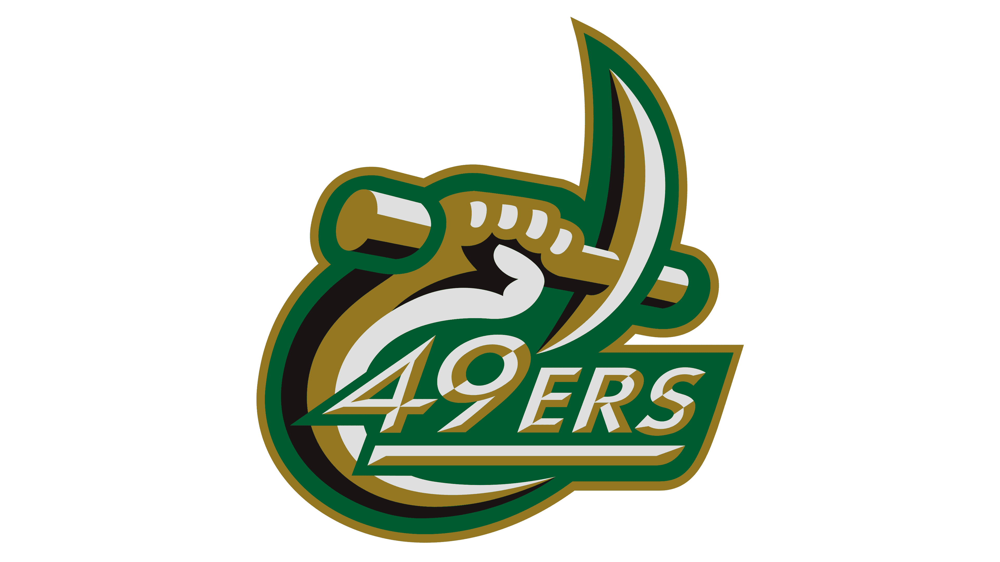

About Us
Niner Spikeball Network is your hub for all things Spikeball at our campus. We're passionate about promoting an active and social lifestyle through the exciting game of Spikeball. Our mission is to create a vibrant community of players who share our love for this sport. Whether you're a seasoned pro or a beginner looking to have some fun, we've got something for everyone.
Niner spike network provides a platform for students to connect, learn about the club, and engage in casual play. We organize regular events that encourage outdoor activities, friendly competition, and, most importantly, building lasting friendships. We believe that the thrill of Spikeball is best experienced with friends, old and new.
Join us to stay updated on upcoming Spikeball events, access club information, and meet like-minded individuals who share your enthusiasm. Niner Spikeball Network is more than just a club; it's a community that's all about enjoying the great outdoors, staying active, and creating unforgettable memories. Let's get outside, embrace the competitive spirit, and make every day a Spikeball day!
